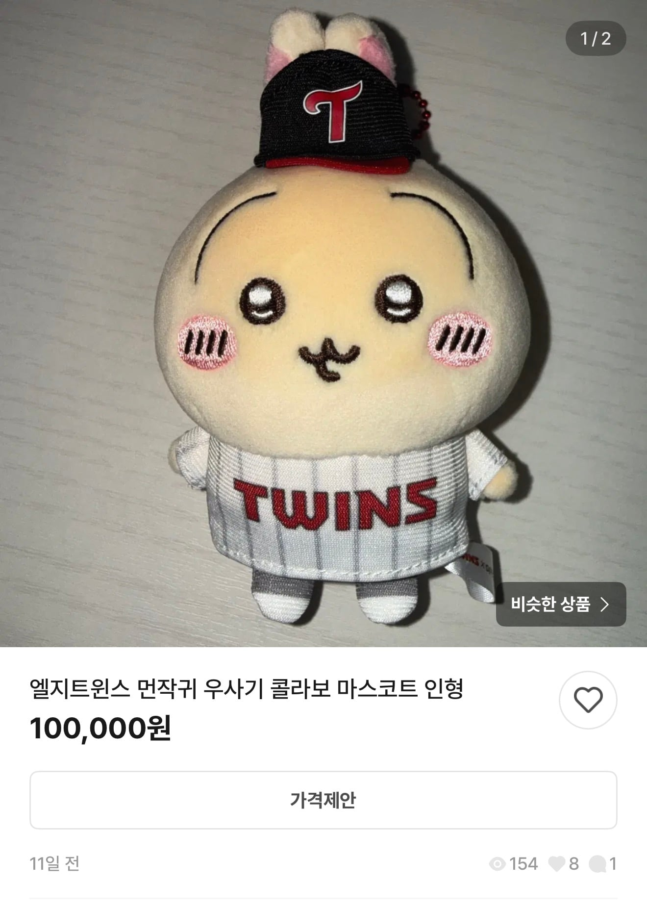
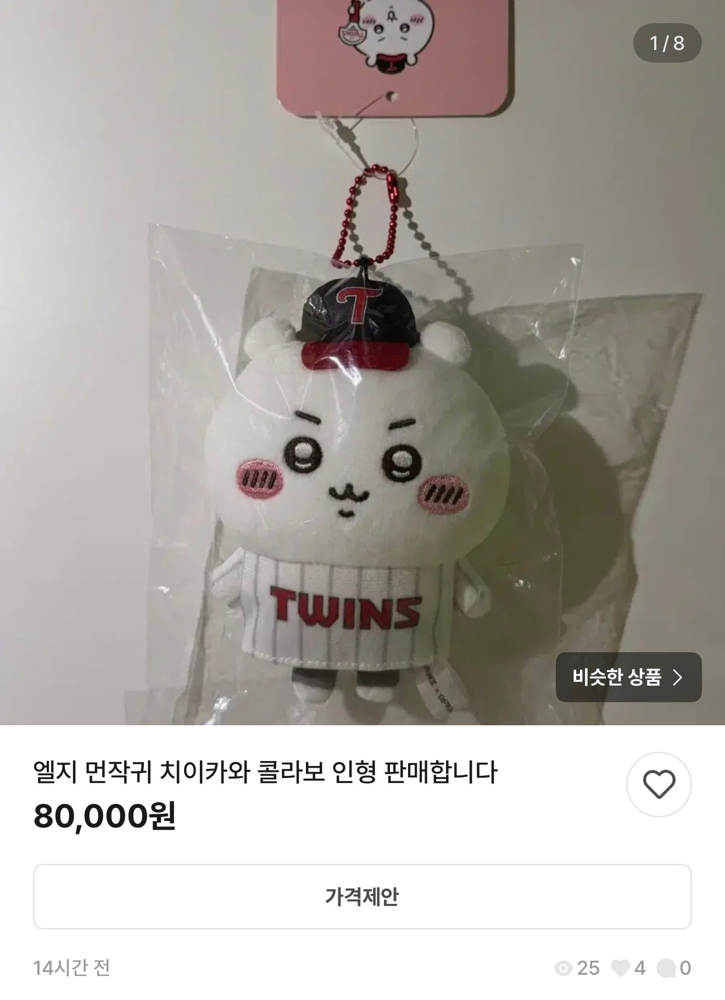
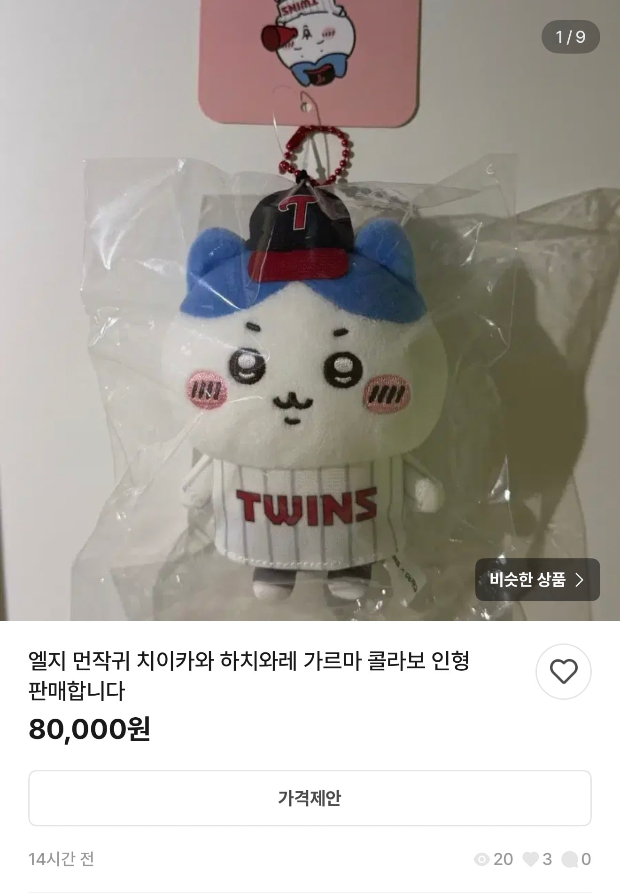

먼작귀 유행 반년 전에 콜라보 굿즈 냈는데 반응 시큰둥 했었음
지금은



번장에서 p 붙여서 팔리는 중
먼작귀 유행 반년 전에 콜라보 굿즈 냈는데 반응 시큰둥 했었음
지금은



번장에서 p 붙여서 팔리는 중
와 퀄 좋네
저거 첨 나왔을때도 다 품절되서 나도 크림에서 3개 샀는데 무슨 거짓 정보를
저가격이 이해안감
저정도로 갖고싶다니
? 나 저거 며칠전에 인형 뽑기로 뽑았은데
비싼거였네
인형뽑기는 다 짭임
젠장! 좋다 말았네
아 피가 붙었다는게 fee가 아니라 primium이었네
LG는 언제나 타이밍이 한 반박자 빠르거나 열박자 느림
나도 네이버 일찍 샀는데
기다려야지